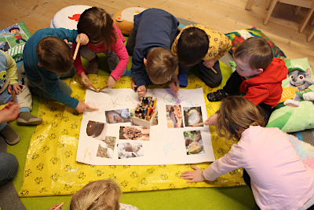

Freude, Staunen, Gemeinschaft
Informationen
Öffnungszeiten
Mo - Fr: 07:15 bis 12:45 Uhr
Bringzeit: 07:15 - 08:30 Uhr
Abholzeit: 11:30 - 12:45 Uhr
Ab 2025/26:
Di - Fr: 07:30 bis 12:30 Uhr
Bringzeit: 07:30 - 08:30 Uhr
Abholzeit: 11:30 - 12:30 Uhr
Ferienregelung
Die Krippe hat in den Schulferien geschlossen.
Kosten
50.- pro Monat plus einmal jährlich 50.- Bastelgeld, ca. 25 .- pro Semester Jausengeld
Aufnahme in die Krippe
Es werden Kinder aus den Gemeinden Gries im Sellrain und St. Sigmund, die im September 18 Monate alt sind, oder das dritte Lebensjahr mit Stichtag 30. August noch nicht abgeschlossen haben, im Februar zur Anmeldung eingeladen und im darauffolgenden Krippenjahr (Start Schuljahr) in der Krippe aufgenommen. Kinder können bei Bedarf auch während des Betreuungsjahres in der Krippe aufgenommen werden.
Räumlichkeiten
Unsere Krippe ist aktuell als Übergangslösung im Widum Gries untergebracht. Wir benutzen den großen Saal als Bewegungsraum, Puppenspiel-, Kreativ- und Baubereich. Im kleinen angrenzenden Raum sind die Kuschelecke, Bilderbücher, Montessori- Materialien, Puzzles, sowie Brettspiele untergebracht. Dort findet auch unser Morgenkreis statt. Den Garten dürfen wir mitbenutzen.